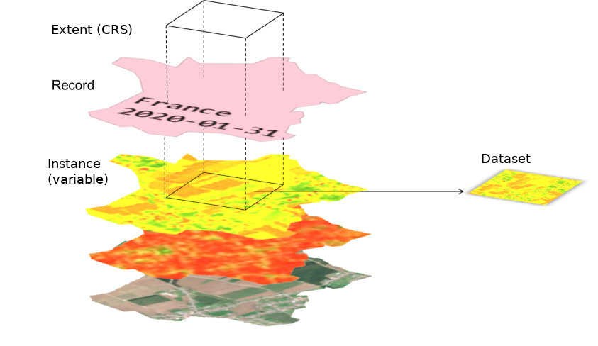

Access
Get images
To retrieve data from the Geocube, the datasets or the containers are not explicitly named. The Geocube will find the datasets depending on user-provided criteria (see GetCubeRequest):
- geography: using either the
aoiof therecordand theshapeof thedataset - semantic: using the
tagsof therecord - time: using the
datetimeof therecord - kind of data: using the
instance
These criteria can return several datasets. The Geocube will automatically do a mosaic of the results.
The geocube only returned 2D rectangular arrays. Once the datasets are filtered by records and instance, the Geocube will extract a rectangular extent using the warp command of GDAL, that automatically deals with reprojection, rescaling and mosaicing . If necessary, a casting of the value is done (see Dataformat mapping).
Finally, the Geocube streams the results through the GRPC interface.
If the resulting image is only no data (because there is no dataset matching the criteria or the extent does not contain data), the image is skipped and the Geocube returns nothing.

Get a cube
A cube of data is just a list of 2D arrays from the same instance, with the same extent in the same crs. Getting an image or getting a cube is exactly the same except that, in the latter case, the request defines a collection of records.
If the Geocube has been optimized to serve the timeseries as efficiently as possible (see Consolidation: - It is faster to request a timeseries than each image one by one. - It is better to request a large area (bigger or equal to the block size) than a lot of small areas.
Get mosaics from several records
If several dataset are linked to the same record, the Geocube returns a mosaic of them.
It's possible to request the Geocube to merge datasets from different records. By passing a GroupedRecords, the Geocube automatically groups the dataset as if they belong to the same records, except that the order is preserved (the datasets belonging to the last record of the group will be on the top of the mosaic).
NB : To be used carefully : the edges are not blended and it may result in visible seams.
To request a cube of grouped records, the request will contain a GroupedRecordsList (actually a list of list of records).
Get metadata only
Instead of returning the images, the Geocube can return the metadata that defined how to build the Cube, using the field headers_only of the GetCube() function.
In particular, Metadata contains:
- URI of datasets, subdir and subbands
- Dataformat of the datasets
Metadata can be useful to understand which datasets are retrieved and it can be passed to a Downloader service, that will download and build the cube as if the cube request is to the Geocube Server.
Using Cloud-Optimized File format
GDAL only reads the part of the image it needs. It results in many small reads, but not all the file is read. To optimize the access to files stored in the Cloud, the Geocube uses a LRU cache and range-request to optimize the read of images. To make the most of this capacity, the files should be in a file format that allow efficient range request, like tilled GeoTIFF, COG (Cloud-Optimize Geotiff) or MuCOG. Some file format should really be avoided, such as JPEG2000 which requires a full download and decompression to access any part of the image.
If the indexed images are not in an appropriate format, they can be Consolidate.